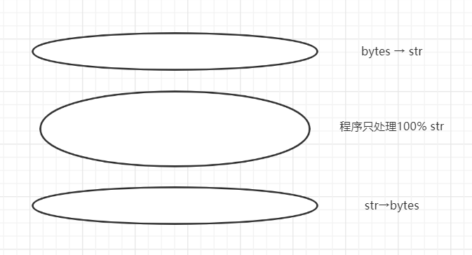

本书作者：测试开发刚哥，文章版权归个人所有，未经授权请勿转载。
编解码器
在字符与字节之间的转换过程称为编解码，Python自带了超过100种编解码器，比如：
- ascii（英文体系）
- gb2312（中文体系）
- utf-8（全球通用）
- latin1
- utf-16
编解码器一般有多个别名，比如
utf8、utf-8、U8。
这些编解码器可以传给open()、str.encode()、bytes.decode()等函数的encoding参数。
UnicodeEncodeError
多数非UTF编解码器（比如cp437）只能处理Unicode字符的一小部分子集。把字符转换成字节时，如果目标编码中没有定义这个字符，那么就会抛出UnicodeEncodeError异常。
处理方式一：使用utf8编码。
处理方式二：添加errors参数：
## 忽略 如b'So Paulo'
city.encode("cp437", errors="ignore")
## 替换为? 如b'S?o Paulo'
city.encode("cp437", errors="replace")
## 替换为XML实体 如b'São Paulo'
city.encode("cp437", errors="xmlcharrefreplace")
UnicodeDecodeError
把字节转换为字符时，遇到无法转换的字节时会抛出UnicodeDecodeError异常。这是因为不是每个字节都包含有效的ASCII字符，也不是每个字符都是有效的UTF-8。
处理方式也有两种，跟上面一样。
SyntaxError
Python3默认使用UTF-8编码源码。如果加载的.py模块中包含UTF-8之外的数据，而且没有声明编码，就会抛出SyntaxError异常。
处理方式是在文件顶部添加coding注释：
## coding: cp1252
但是这个办法并不好，最好还是找到这些报错字符，把它们转换为UTF-8。
从网上直接复制代码到IDE中执行经常会报这个错。
处理文本文件
Unicode三明治：

在程序中尽量少接触二进制，把字节解码为字符，只处理字符串对象。比如在Django中，view应该输出Unicode字符串，Django会负责把响应数据编码成字节序列，而且默认使用UTF-8编码。
Python内置的open函数就是采用了这个原则，在读取文件时会做必要的解码，以文本模式写入文件时会做必要的编码。
文件乱码
Windows更容易遇到这个问题，因为Windows并不是统一的UTF-8编码，比如在Windows10中：
>>> open("cafe.txt", "w", encoding="utf8").write("café")
4
>>> open("cafe.txt").read()
'caf茅'
写入文件时指定了utf8，但是读取文件没有指定，Python就会使用系统默认编码：
>>> import locale
## 打开文件用这个
## 如果没有设置PYTHONENCODING环境变量，sys.stdout/stdin/stderr也用这个
>>> locale.getpreferredencoding()
'cp936'
cp936把最后一个字节解码成了茅而不是é。
>>> import sys # 二进制数据和字符串之间转换用这个 >>> sys.getdefaultencoding() 'utf-8'>>> import sys # 文件名（不是文件内容）用这个 >>> sys.getfilesystemencoding() 'utf-8'
GNU/Linux或Mac OS X不会遇到这个问题，因为多年来它们的默认编码都是UTF-8。
解决办法是一定不能依赖系统默认编码，打开文件时始终应该明确传入encoding=参数，因为不同的设备使用的默认编码可能不同，有时隔一天也会发生变化。
小结
本文介绍了Python的编解码器，以及可能出现的UnicodeEncodeError、UnicodeDecodeError、SyntaxError问题，然后给出了Python的open函数处理文本文件的原则，最后对Windows容易出现的文件乱码问题进行了说明。
参考资料：
《流畅的Python》